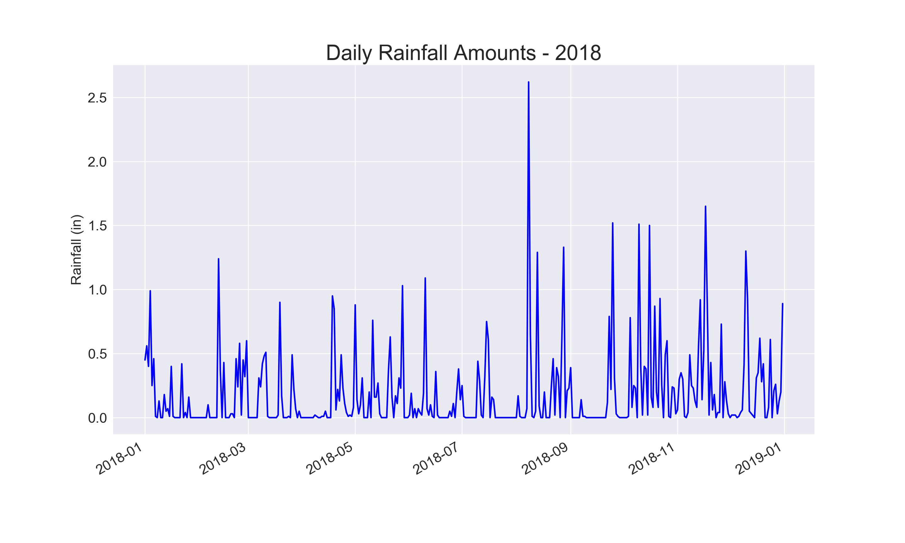
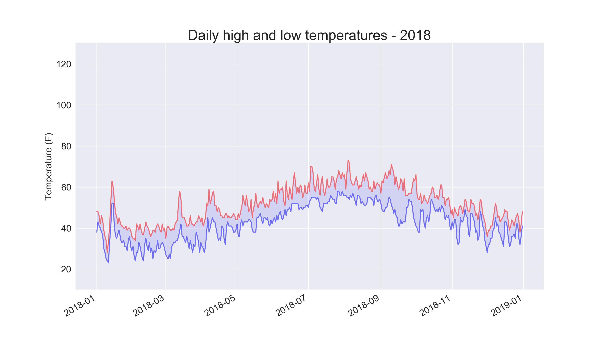
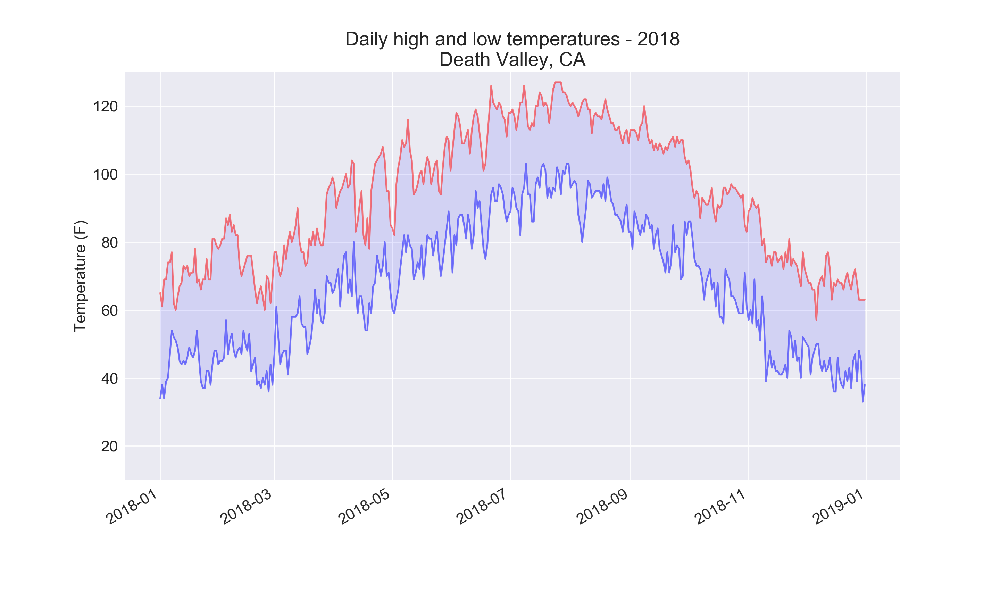
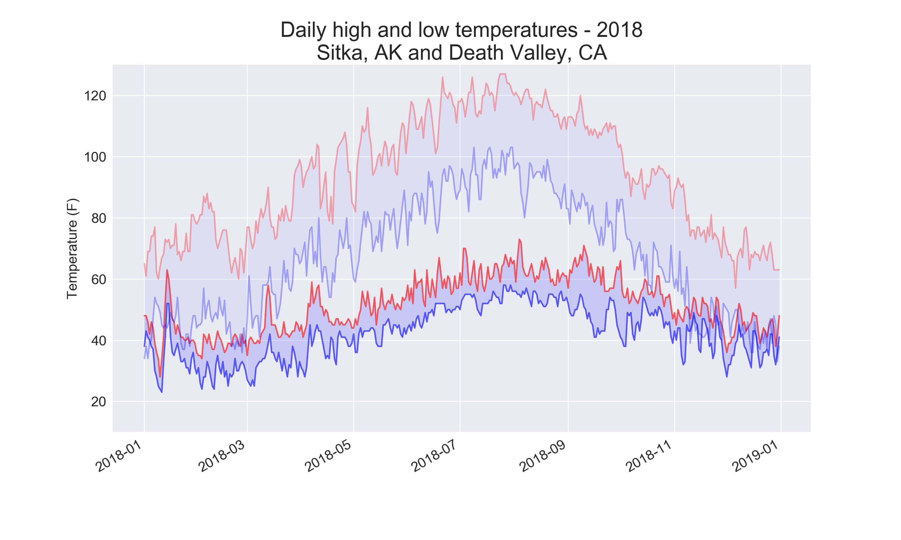
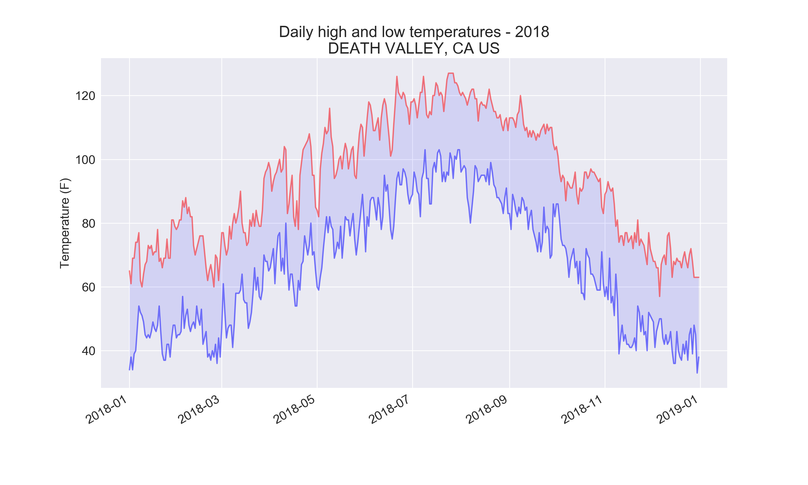
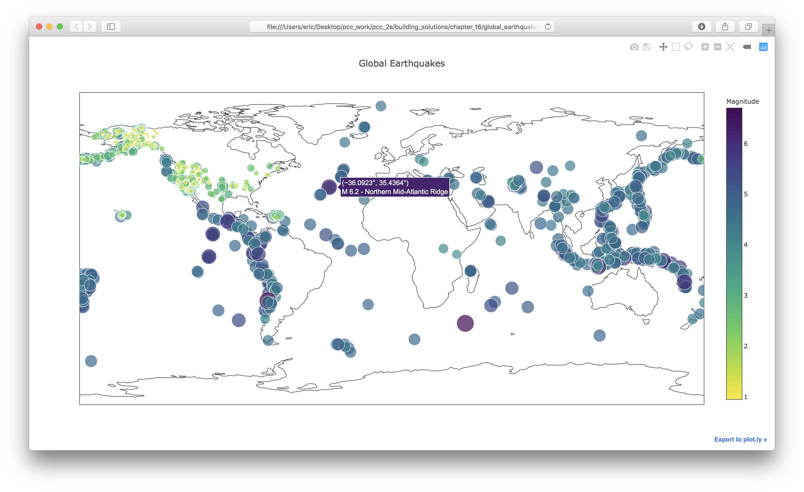
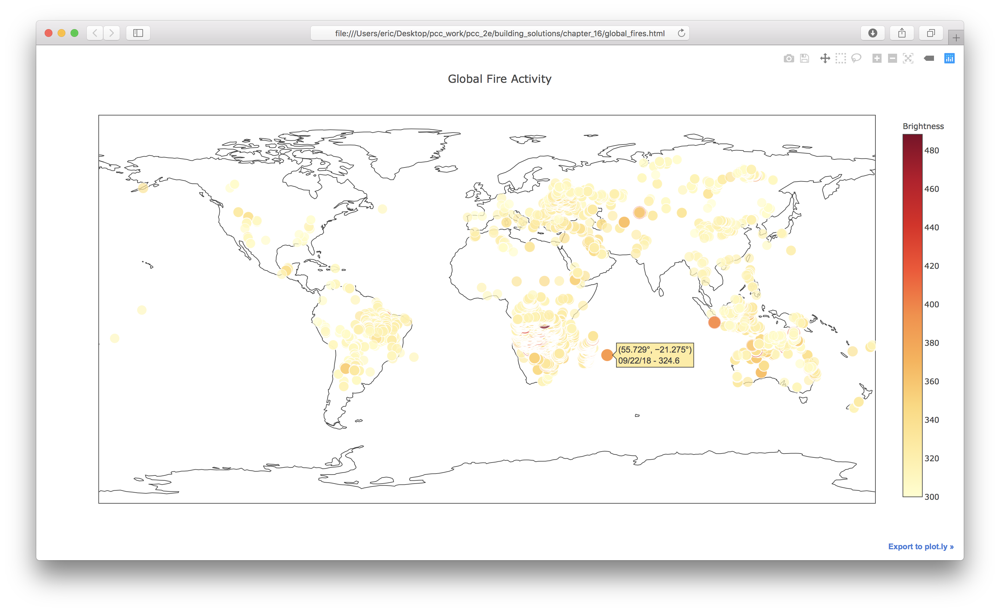

Solutions - Chapter 16
- 16-1: Sitka Rainfall
- 16-2: Sitka–Death Valley Comparison
- 16-4: Automatic Indexes
- 16-6: Refactoring
- 16-7: Automated Title
- 16-9: World Fires
Back to solutions.
16-1: Sitka Rainfall
Sitka is in a temperate rainforest, so it gets a fair amount of rainfall. In the data file sitka_weather_2018_simple.csv is a header called PRCP, which represents daily rainfall amounts. Make a visualization focusing on the data in this column. You can repeat the exercise for Death Valley if you’re curious how little rainfall occurs in a desert.
import csv
from datetime import datetime
from matplotlib import pyplot as plt
filename = 'data/sitka_weather_2018_simple.csv'
with open(filename) as f:
reader = csv.reader(f)
header_row = next(reader)
# Get dates and rainfall amounts from this file.
dates, precips = [], []
for row in reader:
current_date = datetime.strptime(row[2], '%Y-%m-%d')
dates.append(current_date)
precip = float(row[3])
precips.append(precip)
# Plot the rainfall amounts.
plt.style.use('seaborn')
fig, ax = plt.subplots()
ax.plot(dates, precips, c='blue')
# Format plot.
plt.title("Daily Rainfall Amounts - 2018", fontsize=24)
plt.xlabel('', fontsize=16)
fig.autofmt_xdate()
plt.ylabel("Rainfall (in)", fontsize=16)
plt.tick_params(axis='both', which='major', labelsize=16)
plt.show()
Output:

16-2: Sitka–Death Valley Comparison
The temperature scales on the Sitka and Death Valley graphs reflect the different data ranges. To accurately compare the temperature range in Sitka to that of Death Valley, you need identical scales on the y-axis. Change the settings for the y-axis on one or both of the charts in Figures 16-5 and 16-6. Then make a direct comparison between temperature ranges in Sitka and Death Valley (or any two places you want to compare).
The pyplot function ylim() allows you to set the limits of just the y-axis. If you ever need to specify the limits of the x-axis, there’s a corresponding xlim() function as well.
import csv
from datetime import datetime
from matplotlib import pyplot as plt
filename = 'data/sitka_weather_2018_simple.csv'
with open(filename) as f:
reader = csv.reader(f)
header_row = next(reader)
# Get dates, and high and low temperatures from this file.
dates, highs, lows = [], [], []
for row in reader:
current_date = datetime.strptime(row[2], '%Y-%m-%d')
high = int(row[5])
low = int(row[6])
dates.append(current_date)
highs.append(high)
lows.append(low)
# Plot the high and low temperatures.
plt.style.use('seaborn')
fig, ax = plt.subplots()
ax.plot(dates, highs, c='red', alpha=0.5)
ax.plot(dates, lows, c='blue', alpha=0.5)
plt.fill_between(dates, highs, lows, facecolor='blue', alpha=0.1)
# Format plot.
plt.title("Daily high and low temperatures - 2018", fontsize=24)
plt.xlabel('', fontsize=16)
fig.autofmt_xdate()
plt.ylabel("Temperature (F)", fontsize=16)
plt.tick_params(axis='both', which='major', labelsize=16)
plt.ylim(10, 130)
plt.show()
Output:

Using the same limits for the ylim() function with the Death Valley data results in a chart that has the same scale:

There are a number of ways you can approach plotting both data sets on the same chart. In the following solution, we put the code for reading the csv file into a function. We then call it once to grab the highs and lows for Sitka before making the chart, and then call the function a second time to add Death Valley’s data to the existing plot. The colors have been adjusted slightly to make each location’s data distinct.
import csv
from datetime import datetime
from matplotlib import pyplot as plt
def get_weather_data(filename, dates, highs, lows, date_index, high_index,
low_index):
"""Get the highs and lows from a data file."""
with open(filename) as f:
reader = csv.reader(f)
header_row = next(reader)
# Get dates, and high and low temperatures from this file.
for row in reader:
current_date = datetime.strptime(row[date_index], '%Y-%m-%d')
try:
high = int(row[high_index])
low = int(row[low_index])
except ValueError:
print(f"Missing data for {current_date}")
else:
dates.append(current_date)
highs.append(high)
lows.append(low)
# Get weather data for Sitka.
filename = 'data/sitka_weather_2018_simple.csv'
dates, highs, lows = [], [], []
get_weather_data(filename, dates, highs, lows, date_index=2, high_index=5,
low_index=6)
# Plot Sitka weather data.
plt.style.use('seaborn')
fig, ax = plt.subplots()
ax.plot(dates, highs, c='red', alpha=0.6)
ax.plot(dates, lows, c='blue', alpha=0.6)
plt.fill_between(dates, highs, lows, facecolor='blue', alpha=0.15)
# Get weather data for Death Valley.
filename = 'data/death_valley_2018_simple.csv'
dates, highs, lows = [], [], []
get_weather_data(filename, dates, highs, lows, date_index=2, high_index=4,
low_index=5)
# Add Death Valley data to current plot.
ax.plot(dates, highs, c='red', alpha=0.3)
ax.plot(dates, lows, c='blue', alpha=0.3)
plt.fill_between(dates, highs, lows, facecolor='blue', alpha=0.05)
# Format plot.
title = "Daily high and low temperatures - 2018"
title += "\nSitka, AK and Death Valley, CA"
plt.title(title, fontsize=24)
plt.xlabel('', fontsize=16)
fig.autofmt_xdate()
plt.ylabel("Temperature (F)", fontsize=16)
plt.tick_params(axis='both', which='major', labelsize=16)
plt.ylim(10, 130)
plt.show()
Output:

16-4: Automatic Indexes
In this section, we hardcoded the indexes corresponding to the TMIN and TMAX columns. Use the header row to determine the indexes for these values, so your program can work for Sitka or Death Valley. Use the station name to automatically generate an appropriate title for your graph as well.
The index() method returns the index of an item in a list. For example:
>>> animals = ['cat', 'dog', 'mouse', 'elephant']
>>> animals.index('dog')
1
This can help us pull the indexes of the headers we want from the header row:
import csv
from datetime import datetime
from matplotlib import pyplot as plt
filename = 'data/death_valley_2018_simple.csv'
filename = 'data/sitka_weather_2018_simple.csv'
place_name = ''
with open(filename) as f:
reader = csv.reader(f)
header_row = next(reader)
print(header_row)
date_index = header_row.index('DATE')
high_index = header_row.index('TMAX')
low_index = header_row.index('TMIN')
name_index = header_row.index('NAME')
# Get dates, and high and low temperatures from this file.
dates, highs, lows = [], [], []
for row in reader:
# Grab the station name, if it's not already set.
if not place_name:
place_name = row[name_index]
print(place_name)
current_date = datetime.strptime(row[date_index], '%Y-%m-%d')
try:
high = int(row[high_index])
low = int(row[low_index])
except ValueError:
print(f"Missing data for {current_date}")
else:
dates.append(current_date)
highs.append(high)
lows.append(low)
# Plot the high and low temperatures.
plt.style.use('seaborn')
fig, ax = plt.subplots()
ax.plot(dates, highs, c='red', alpha=0.5)
ax.plot(dates, lows, c='blue', alpha=0.5)
plt.fill_between(dates, highs, lows, facecolor='blue', alpha=0.1)
# Format plot.
title = f"Daily high and low temperatures - 2018\n{place_name}"
plt.title(title, fontsize=20)
plt.xlabel('', fontsize=16)
fig.autofmt_xdate()
plt.ylabel("Temperature (F)", fontsize=16)
plt.tick_params(axis='both', which='major', labelsize=16)
plt.show()
Output:

16-6: Refactoring
The loop that pulls data from all_eq_dicts uses variables for the magnitude, longitude, latitude, and title of each earthquake before appending these values to their appropriate lists. This approach was chosen for clarity in how to pull data from a JSON file, but it’s not necessary in your code. Instead of using these temporary variables, pull each value from eq_dict and append it to the appropriate list in one line. Doing so should shorten the body of this loop to just four lines.
import json
from plotly.graph_objs import Scattergeo, Layout
from plotly import offline
# Explore the structure of the data.
filename = 'data/eq_data_30_day_m1.json'
with open(filename) as f:
all_eq_data = json.load(f)
all_eq_dicts = all_eq_data['features']
mags, lons, lats, hover_texts = [], [], [], []
for eq_dict in all_eq_dicts:
mags.append(eq_dict['properties']['mag'])
lons.append(eq_dict['geometry']['coordinates'][0])
lats.append(eq_dict['geometry']['coordinates'][1])
hover_texts.append(eq_dict['properties']['title'])
# Map the earthquakes.
data = [{
'type': 'scattergeo',
'lon': lons,
'lat': lats,
'text': hover_texts,
'marker': {
'size': [5*mag for mag in mags],
'color': mags,
'colorscale': 'Viridis',
'reversescale': True,
'colorbar': {'title': 'Magnitude'},
},
}]
my_layout = Layout(title='Global Earthquakes')
fig = {'data': data, 'layout': my_layout}
offline.plot(fig, filename='global_earthquakes.html')
Output:

16-7: Automated Title
In this section, we specified the title manually when defining my_layout, which means we have to remember to update the title every time the source file changes. Instead, you can use the title for the data set in the metadata part of the JSON file. Pull this value, assign it to a variable, and use this for the title of the map when you’re defining my_layout.
import json
from plotly.graph_objs import Scattergeo, Layout
from plotly import offline
# Explore the structure of the data.
filename = 'data/eq_data_30_day_m1.json'
with open(filename) as f:
all_eq_data = json.load(f)
title = all_eq_data['metadata']['title']
all_eq_dicts = all_eq_data['features']
mags, lons, lats, hover_texts = [], [], [], []
for eq_dict in all_eq_dicts:
mags.append(eq_dict['properties']['mag'])
lons.append(eq_dict['geometry']['coordinates'][0])
lats.append(eq_dict['geometry']['coordinates'][1])
hover_texts.append(eq_dict['properties']['title'])
# Map the earthquakes.
data = [{
'type': 'scattergeo',
'lon': lons,
'lat': lats,
'text': hover_texts,
'marker': {
'size': [5*mag for mag in mags],
'color': mags,
'colorscale': 'Viridis',
'reversescale': True,
'colorbar': {'title': 'Magnitude'},
},
}]
my_layout = Layout(title=title)
fig = {'data': data, 'layout': my_layout}
offline.plot(fig, filename='global_earthquakes.html')
Output:
16-9: World Fires
In the resources for this chapter, you’ll find a file called world_fires_1_day.csv. This file contains information about fires burning in different locations around the globe, including the latitude and longitude, and the brightness of each fire. Using the data processing work from the first part of this chapter and the mapping work from this section, make a map that shows which parts of the world are affected by fires.
You can download more recent versions of this data at https://earthdata.nasa.gov/earth-observation-data/near-real-time/firms/active-fire-data/. You can find links to the data in CSV format in the TXT section.
Note: There are over 27,000 rows listed in the file world_fires_1_day.csv. Using all of these rows was stressing my system, so I added a block to stop processing the data after 10,000 rows. You may want to change this number, or leave this limit out if your system can handle the entire data set smoothly.
import csv
from datetime import datetime
from plotly.graph_objs import Scattergeo, Layout
from plotly import offline
num_rows = 10_000
filename = 'data/world_fires_1_day.csv'
with open(filename) as f:
reader = csv.reader(f)
header_row = next(reader)
# Get brightnesses, lats and lons, and dates.
dates, brightnesses = [], []
lats, lons = [], []
hover_texts = []
row_num = 0
for row in reader:
date = datetime.strptime(row[5], '%Y-%m-%d')
brightness = float(row[2])
label = f"{date.strftime('%m/%d/%y')} - {brightness}"
dates.append(date)
brightnesses.append(brightness)
lats.append(row[0])
lons.append(row[1])
hover_texts.append(label)
row_num += 1
if row_num == num_rows:
break
# Map the fires.
data = [{
'type': 'scattergeo',
'lon': lons,
'lat': lats,
'text': hover_texts,
'marker': {
'size': [brightness/20 for brightness in brightnesses],
'color': brightnesses,
'colorscale': 'YlOrRd',
'reversescale': True,
'colorbar': {'title': 'Brightness'},
},
}]
my_layout = Layout(title='Global Fire Activity')
fig = {'data': data, 'layout': my_layout}
offline.plot(fig, filename='global_fires.html')
Output:
